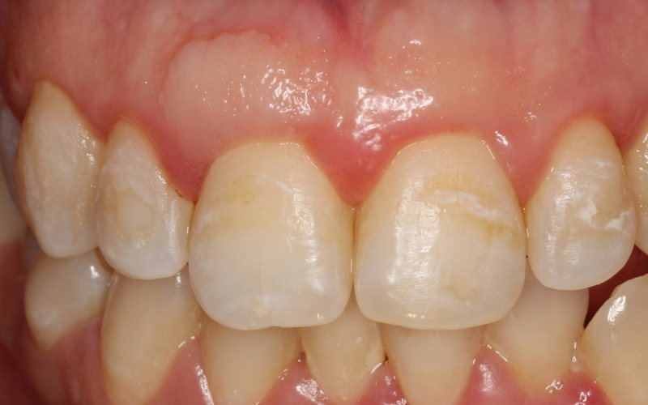
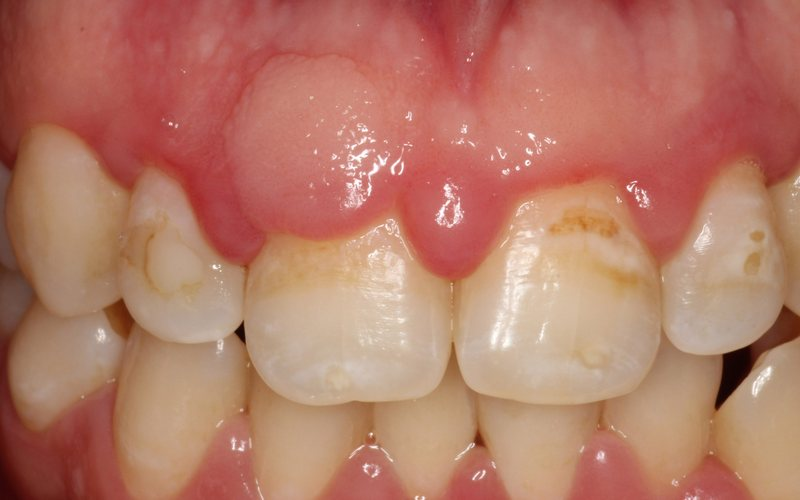

Implantología
Reposición de piezas perdidas mediante implantes, desde un diente unitario hasta arcadas completas.
- Implante unitario
- Puentes sobre implantes
- Arcada completa
Más de tres décadas dedicadas a la rehabilitación oral y la estética dental. Diagnóstico minucioso, planes de tratamiento claros y un trato cercano en nuestra clínica de la calle del Dr. Fleming.
Cada tratamiento parte de un estudio completo de la boca: encía, hueso, oclusión y sonrisa. Así planificamos soluciones que funcionan y duran, y que se ven naturales.
Reposición de piezas perdidas mediante implantes, desde un diente unitario hasta arcadas completas.
Recuperamos la capacidad de masticar, hablar y sonreír con comodidad cuando la boca ha sufrido desgaste o pérdidas.
Mejoramos el color, la forma y la armonía de la sonrisa respetando al máximo el diente natural.
Alineamos los dientes y corregimos la mordida con la opción que mejor encaje con su caso y su día a día.
Cuidado de encías y hueso, la base sobre la que se sostiene cualquier tratamiento a largo plazo.
Revisiones, empastes, endodoncias e higiene profesional para mantener la salud de toda la familia.
Estudio radiológico y fotográfico para explicar con claridad la situación de partida y las opciones de tratamiento.
Pacientes tratados en la clínica. Elija un tratamiento y deslice la línea sobre la fotografía para ver el cambio.


Dientes amarillentos, desgastados y con espacios. Las carillas igualan el color y devuelven la proporción a la sonrisa.
Ver casos de estética dental

Dientes muy deteriorados sustituidos por prótesis fijas sobre implantes en ambas arcadas: siete arriba y cuatro abajo.
Ver casos de implantes

Los mismos dientes naturales, varios tonos más claros. La guía de color de la foto permite medir el cambio.
Ver casos de blanqueamiento

Encía inflamada y agrandada que cubría parte de los incisivos. Tras el tratamiento periodontal recupera su color y su contorno.
Ver casos de periodonciaImágenes de pacientes de la clínica publicadas con su consentimiento. Los resultados varían en cada caso.
Una boca bien rehabilitada no se nota. Simplemente funciona, y se ve como siempre debió verse.
Desde 1990, Clínica Herrero Climent atiende a pacientes de Chamartín y de todo Madrid. Muchos de ellos llevan décadas confiándonos su salud bucodental, y hoy vienen también sus hijos y nietos.
Nuestro trabajo se centra en los casos que requieren una visión de conjunto: bocas con piezas perdidas, desgastes, prótesis antiguas o sonrisas que el paciente quiere mejorar. Dedicamos el tiempo necesario a cada diagnóstico.
Más de 35 años ejerciendo en el mismo barrio.
Planificación detallada antes de cada tratamiento.
Le explicamos cada paso y cada presupuesto.
Médico y odontólogo, doctor en Ciencias Odontológicas por la Universidad Complutense de Madrid. Desde 1990 dedica su consulta a la rehabilitación oral, la periodoncia y la implantología, y desde 1996 forma a otros dentistas como profesor invitado en programas de posgrado de la Complutense.
Licenciado en Medicina y CirugíaUniversidad de Alcalá de Henares
Licenciado en OdontologíaUniversidad Iberoamericana (UNIBE), Santo Domingo
Posgrado en PeriodonciaRoyal Dental College, Aarhus (Dinamarca)
Máster en PeriodonciaUniversidad Complutense de Madrid
Máster en Estética y Rehabilitación OralUniversitat Politècnica de Catalunya
Doctorado en Ciencias OdontológicasUniversidad Complutense de Madrid
Práctica privada en MadridRehabilitación oral, periodoncia, implantología y estética dental
Socio especialista de SEPASociedad Española de Periodoncia y Osteointegración
Profesor invitado del Máster de PeriodonciaUniversidad Complutense de Madrid
Profesor invitado del Diploma Universitario en Implantología ClínicaUniversidad Complutense de Madrid
Profesor invitado del Máster en Nuevas TecnologíasUniversidad Complutense de Madrid
Autor del libro Atlas Clínico de Implantología OralTRP Ediciones
Traductor del libro Factores de Riesgo en Implantología OralEditorial Quintessence
Capítulo «Prevención de la patología periimplantaria»En Odontología preventiva y odontología comunitaria. Ed. Avances Médico-Dentales
Capítulo «Superficies de implantes»En Manual SEPA de Periodoncia y Terapéutica de Implantes. Ed. Panamericana
Sabemos que acudir al dentista genera dudas. Por eso cada paciente sabe en todo momento qué vamos a hacer, cuánto durará y cuánto costará.
Llámenos al 913 594 950 o escríbanos y le daremos hora en el horario que mejor le encaje.
Exploración completa, radiografías y fotografías para conocer el estado de su boca.
Le presentamos las opciones, los plazos y un presupuesto cerrado por escrito.
Realizamos el tratamiento acordado y programamos las revisiones de mantenimiento.
Atención con cita previa. Para cualquier consulta o urgencia durante nuestro horario, llámenos por teléfono.
| Lunes | 8:00 – 15:00 |
|---|---|
| Martes | 8:00 – 15:00 |
| Miércoles | 8:00 – 15:00 |
| Jueves | 8:00 – 15:00 |
| Viernes | 9:00 – 13:00 |
| Sábado | Cerrado |
| Domingo | Cerrado |
Consulte nuestro horario
En días festivos el horario puede variar. Le recomendamos llamar antes de acudir.